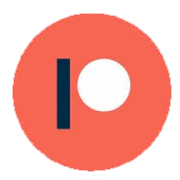

The purpose of System Uprise is to offer solutions to public institutions, non-profits and political entities through innovative technology. Our greatest task will be to build resources that fosters political discourse in the public interest.
Those who decide to become a member of System Uprise will help move us in a direction that will cater to the needs of everyone. If you would like to help out, please consider becoming a member of Patreon and give monthly contributions.
PatreonThe advent of the internet has given communities an outlet to further express their social and political views. As such, System Uprise is looking to provide a platform to allow communities to engage in a manner familiar to democratic governance.